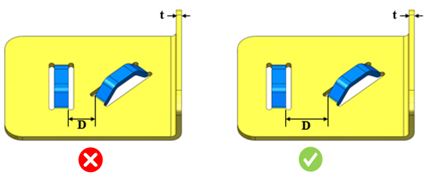

ブリッジランス形状間の最小距離と板厚との比率は、推奨値に従う必要があります。
工具の干渉や損傷、ならびに変形やバリの発生を防ぐために、ブリッジランス形状間の最小距離を確保する必要があります。
一般に、2つのブリッジランス形状間の最小距離と板厚との比率は、4.5 以上である必要があります。
DFMPro はブリッジランス形状を識別し、2つのブリッジランス形状間の距離と板厚との比率を算出します。この比率は、設定された比率値に対して検証されます。
ユーザーは、デフォルトで設定されている比率を編集することができます。
ルール UI では、材料の一覧が Map Material から読み込まれ、ユーザーは材料およびその値を設定することができます。
材料とその値を設定した後、ユーザーは Ctrl+M コマンドを使用して、ルール UI 上で設定済みの材料（材料グループおよびグレード）をフィルタ表示することができます。同じキー（Ctrl+M）を使用して、フィルタを解除することもできます。

ここで、
t = 板厚
D = ブリッジランス間の最小距離